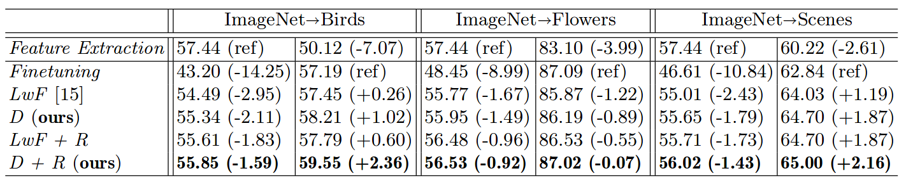

Fig 1. Illustration of Distillation and Retrospection.
Abstract
Lifelong learning aims at adapting a learned model to new tasks while retaining the knowledge gained earlier. A key challenge for lifelong learning is how to strike a balance between the preservation on old tasks and the adaptation to a new one within a given model. Approaches that combine both objectives in training have been explored in previous works. Yet the performance still suffers from considerable degradation in a long sequence of tasks. In this work, we propose a novel approach to lifelong learning, which tries to seek a better balance between preservation and adaptation via two techniques: Distillation and Retrospection. Specifically, the target model adapts to the new task by knowledge distillation from an intermediate expert, while the previous knowledge is more effectively preserved by caching a small subset of data for old tasks. The combination of Distillation and Retrospection leads to a more gentle learning curve for the target model, and extensive experiments demonstrate that our approach can bring consistent improvements on both old and new tasks.Architcture
Fig 2. Illustration of network structures for Distillation+Retrospection.
Performance
Table 1. Classification accuracy (%) for two-task scenario. Feature Extraction provides the reference performance for the first task while Finetuning provides the reference for the second one. D for Distillation, and R for Retrospection.
Table 2. Classification accuracy (%) for five-task scenario. The results are reported at the end of the last training stage. LwF is treated as the baseline here.
| (a) Imagenet→Scenes→Birds→Flowers→Aircrafts. | (b) Imagenet→Birds→Flowers→Aircrafts→Scenes. |
Fig 3. Accuracy degradation on ImageNet in five-task scenario. D for Distillation, and R for Retrospection.